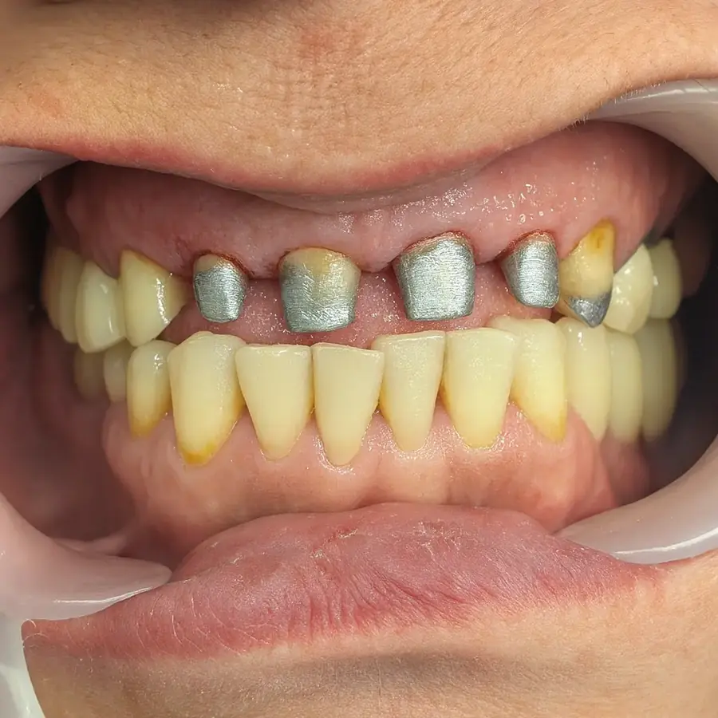

نسخه استخراجشده؛ ترجمه یا تأیید علمی انجام نشده است. وضعیت: captured
بیمار با دندانهای قدامی بهشدت پوسیده آمده است؛ دندانهایی که پیشتر فرد غیر دندانپزشک با ونیر کامپوزیت به اصطلاح «زیباسازی» کرده بود. هیچ ساپورت خلفی ندارد. شکایتش قدام است؛ درمان از کجا باید شروع شود؟
نبود هرگونه ساپورت خلفی باعث شده بود تمام نیروهای فانکشنال روی دندانهای قدام قرار بگیرد و امکان بازسازی قدام دچار چالش شده بود. زمانی که استاپ خلفی از بین میرود، احتمال شکست در قدام بالا میرود.
شکایت بیمار قدام بود، اما بدون ساپورت خلفی تمام نیروی فانکشن روی همان قدام مینشست؛ پس بازسازی از خلف شروع شد تا بستری امن برای کار قدامی فراهم شود.
پیش از تحویل پستوکورها، روی ایمپلنتها روکش موقت گذاشته شد تا VD به مقدار نرمال و استاندارد قبل بازگردانده شود. پس از تثبیت VD، پستوکورها ساخته شدند و کیس اکنون آمادهی ادامهی بازسازی است.

تصمیم درمانی نهایی احتمالاً بازسازی یکپارچه و همزمان قدام و راست بالا خواهد بود؛ بدون نگرانی از ساپورت، چون خلف پایین چپ استاپ پایدار و قابل اعتماد دارد.
وقتی استاپ خلفی وجود ندارد و VD تغییر میکند، ضروری است که پیش از شروع بازسازی قدام:
ترتیب درمان را بیومکانیک تعیین میکند، نه ترتیب شکایتها؛ وارونه کردن این توالی، بازسازی قدام را روی زمین لرزان بنا میکند.
نوع سؤال: ساخت کلمه · 5 خانه
حروف منبع: ث · ب · ت · ت · ی